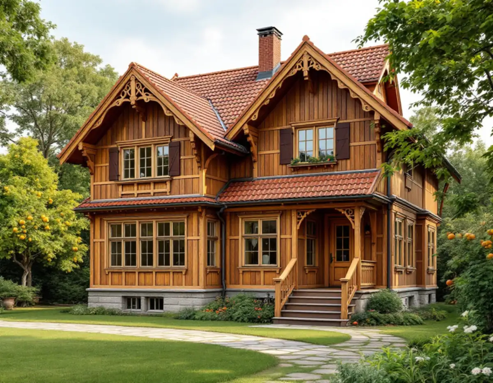
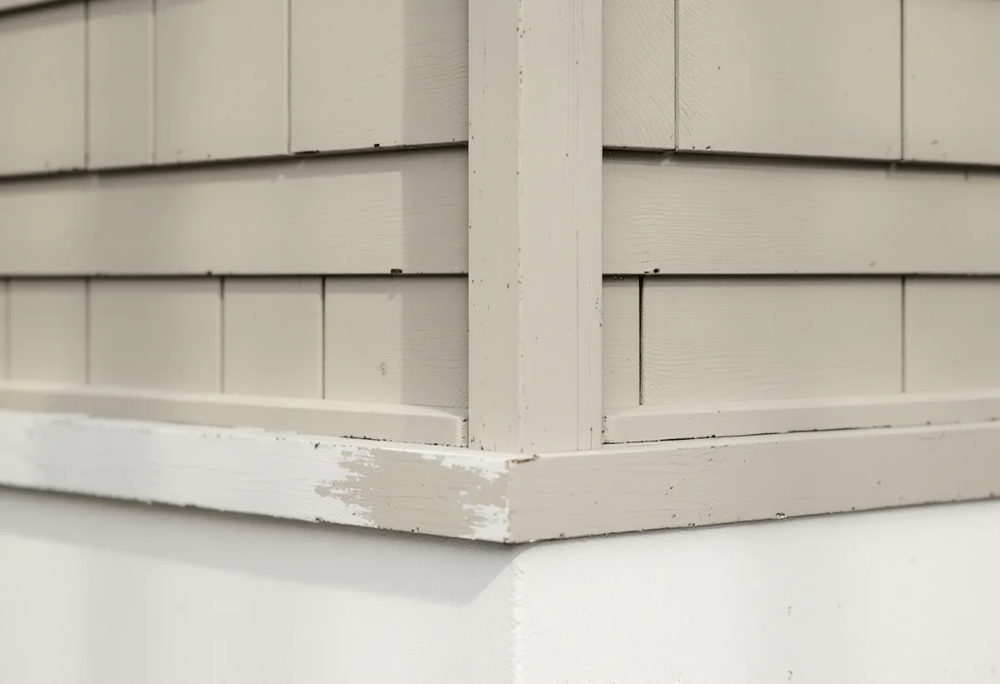
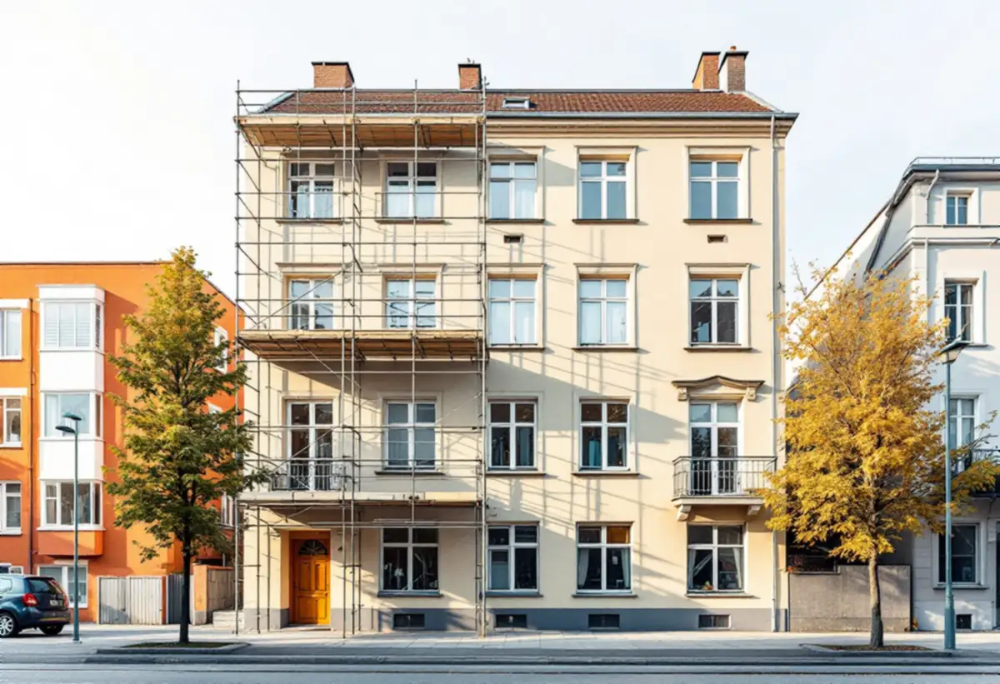

Platsbesök
Vi går igenom panel eller puts, socklar och knutar och bestämmer husets tillkomsttid.
En villa i Duvbo kan ha fält av fasspontpanel, locklistpanel eller slätputs beroende på när den byggdes. Det avgör hur fasaden ska renoveras – och i Duvbo krävs lov för det mesta. Geal Entreprenad AB renoverar fasader i Sundbyberg, både på villorna i Duvbo och på stadens flerbostadshus.

Sundbybergs miljöprogram för Duvbo berättar att föreningen Egna Hem bildades 1898 för att skapa egna hem för arbetare. Året därpå köptes egendomen Dufvebol i Spånga församling, och en stadsplan med 325 tomter upprättades. Området utökades 1924 med ytterligare 98 villatomter, och Riksantikvarieämbetet pekade 1987 ut Duvbo som riksintresse för kulturmiljövården – som ett av de första exemplen på en välorganiserad egnahemsförstad i Stockholmstrakten.
Programmet delar in den äldre bebyggelsen i tre generationer med olika fasader. Sekelskiftesvillorna i schweizerstil har stående och liggande fasspontpanel indelad i fält med listverk, höga socklar i natursten och heltäckande linoljefärg eller faluröd slamfärg, och gott om lövsågerier. 1920-talets egnahem har locklistpanel, ibland puts, med markerade knutar, putsade socklar och klassicerade detaljer. Husen från 1940-talet är funktionalistiska, med slätputs, putsade socklar, få och enkla detaljer och kalkfärg i ljusa kulörer. I programmets tabell har alla tre generationerna tak av rött lertegel, sekelskiftesvillorna även falsad slätplåt eller papp.
Både sekelskiftesvillorna och 1920-talets hus står enligt programmet i två våningar på höga, nivåutjämnande socklar, och träfasaderna målades ursprungligen med linoljefärg eller slamfärg i tidstypiska, jordnära färgskalor. Sekelskiftesvillorna byggdes ofta av ägarna själva och visar en rik provkarta på tidens smakriktningar – två grannhus kan alltså ha helt olika panelindelning. När en bräda eller ett fält ska bytas tar vi därför mått och profil från det egna huset, inte från grannens.

För de flesta villor krävs inte längre bygglov för fasadändringar, men Sundbybergs stad skriver att det inte gäller i Duvbo. Där är lovplikten utökad, liksom för byggnader som är kulturhistoriskt värdefulla, och för det mesta krävs bygglov. Enligt miljöprogrammet omfattar den utökade lovplikten bland annat utbyte av fasadbeklädnad och takmaterial, omfärgning av fasaden och utbyte, flyttning eller igensättning av fönster och dörrar. Som fasadändring räknar staden också tilläggsisolering.
Programmet ger även råd för själva underhållet. Vid underhållsarbeten och andra förändringar av husets yttre ska utförande, material och materialbehandling om möjligt väljas i överensstämmelse med originalet eller byggnadens tillkomsttid, och husets tidstypiska uttryck får inte förvanskas genom byte av fasadmaterial eller genom färgsättning. För färgförslag hänvisar programmet till kommunens förvaltning. Till en ansökan behövs enligt staden oftast situationsplan, plan- och fasadritning, kulör- och materialbeskrivning och kontrollplan. Krävs inget lov kan den som vill söka ett så kallat frivilligt bygglov, för att få beslut på att åtgärden följer lagens krav.
För stadens flerbostadshus gäller en annan regel än för villorna. För byggnader som inte är en- eller tvåbostadshus kräver Sundbybergs stad bygglov när ändringen görs på fasad eller tak som vetter mot allmän plats. Påverkar arbetet väsentligt byggnadens bärande delar eller brandskydd kan dessutom en anmälan krävas, även när åtgärden inte är lovpliktig, och då ska startbesked ha getts innan arbetet börjar.
Staden påminner också om att byggherren ansvarar för att lagstiftningen följs även när en fasadändring inte kräver lov eller anmälan, bland annat för att det som byggs är lämpligt utformat och att kraven på säkerhet uppfylls. Vi tar fram kulör- och materialbeskrivning och ritningsunderlag när det behövs, och samordnar fasadarbetet med plåt och tak. Mer om andra arbeten i staden finns under målare i Sundbyberg, snickare i Sundbyberg och takläggare i Sundbyberg.

Vi går igenom panel eller puts, socklar och knutar och bestämmer husets tillkomsttid.
I Duvbo stämmer vi av lovplikten innan material eller kulör väljs.
Lagning, byte av panel, puts och målning redovisas var för sig.
Behövs lov tar vi fram kulör- och materialbeskrivning och underlag till ritningarna.
Panel byts med samma profil och indelning, och puts lagas med bruk som passar det gamla.
Linoljefärg, slamfärg eller kalkfärg efter vad huset hade från början.
Äger du en villa i Duvbo räknar Skatteverket att byta, mura, reparera och måla fasader som rotarbete, liksom att montera och montera ner byggnadsställningar i samband med arbetet. Avdraget är högst 30 procent av arbetskostnaden, som mest 50 000 kr per person och år och 75 000 kr tillsammans med rutavdrag. Material och resor ger inget avdrag. Vi drar avdraget direkt på fakturan.
Bor du i en bostadsrätt i ett av stadens flerbostadshus är fasaden en gemensam yta, och arbete där ger inget rotavdrag.
Fasadens yta, hur mycket panel eller puts som måste bytas, om listverk och lövsågerier ska kompletteras, vilken färgtyp huset kräver och om ett bygglov behöver förberedas styr kostnaden. Efter ett gratis platsbesök får du ett skriftligt kostnadsförslag.
Puts, panel och tilläggsisolering.
Fasadrenovering i Stockholm →Takbyte, takbesiktning och plåtarbeten.
Takläggare i Sundbyberg →Rött lertegel och synliga taktassar i Duvbo.
Takrenovering i Sundbyberg →Ventilationen, OVK och Duvbo.
Badrumsrenovering i Sundbyberg →Nytt hus, träd och regler i Duvbo.
Byggföretag i Sundbyberg →Duvbo, flerbostadshusen och lovet.
Fönsterbyte i Sundbyberg →Trägolv i äldre villor och nya golv.
Golvläggare i Sundbyberg →Ta bort färg och fernissa från gamla golv.
Golvslipning i Sundbyberg →Duvbos villor och stadens lägenhetskök.
Köksrenovering i Sundbyberg →Lamellhus, kulörbyte och bostadsrätt.
Målare i Sundbyberg →Duvbos tak, rännor och lov.
Plåtslagare i Sundbyberg →Altan, pergola och staket enligt stadens guide.
Snickare i Sundbyberg →Container, ställning och grannar.
Takbyte i Sundbyberg →Ny tapet i äldre lägenheter.
Tapetsering i Sundbyberg →Duvbo, träden och riktlinjerna.
Tillbyggnad i Sundbyberg →